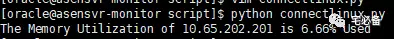

使用paramiko获取linux系统内存使用率
前面介绍了如何运用Python获取Oracle数据库的信息以及将数据存入MySQL数据库中
这个专题将介绍如何使用Python监控linux/Unix服务器的性能指标
上节我们讲了如何连接linux服务器并获取CPU信息，这节讲如何获取内存信息
环境设置
Linux系统为 Centos 6.8
Python环境为 Python 3.6
连接Unix类服务器模块: paramiko
获取内存使用率程序
如下程序使用paramiko连接linux服务器然后获取其内存使用率，具体注释请看详细代码
这里我们使用free命令来获取内存使用率
def getlinuxmem(ssh):
result=[]
stdin,stdout,stderr=ssh.exec_command('free -m |awk \' NR==2 {print (($3 - $6 - $7)/$2)*100}\'')
err=stderr.readlines()
if len(err) != 0:
print (err)
return False
else:
stdout_content=stdout.readlines()
result= stdout_content
try:
if len(result) !=0:
return round(float(result[0].strip()),2)
else:
print ('There is something wrong when execute free command')
except Exception as e:
print (e)
验证结果

正常情况下会返回该服务器的内存使用率
如不正常，代码中大量的异常处理可以帮助大家快速定位异常点
源码位置
全部代码请查看我的Github主页
https://github.com/bsbforever/wechat_oms
今天就讲到这，下节讲述如何获取linux分区的分区使用率